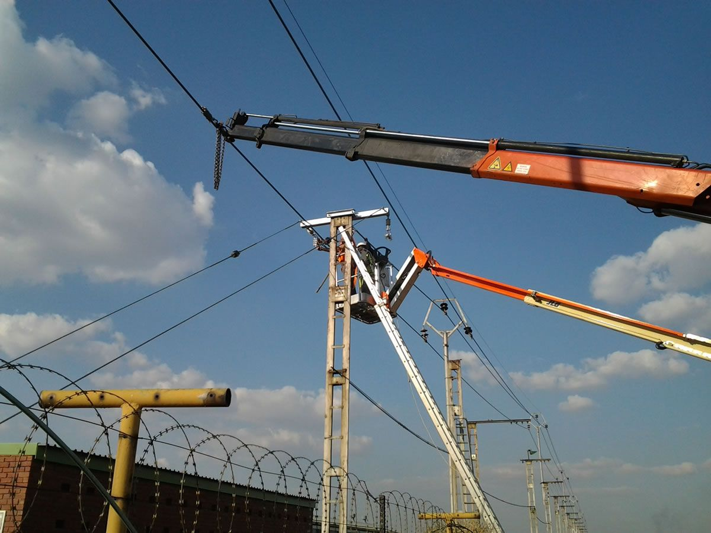
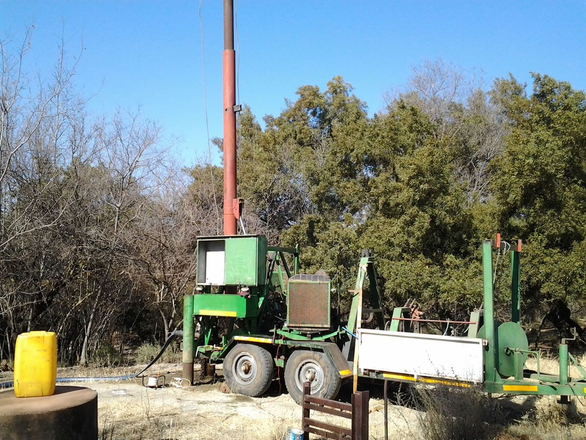
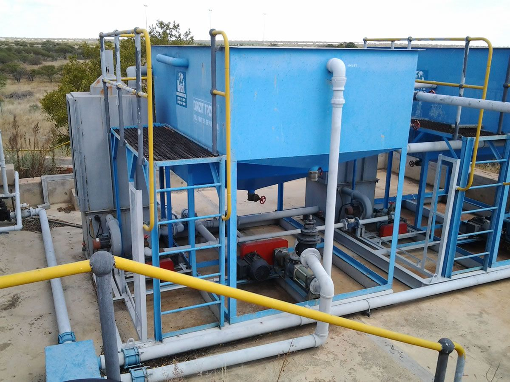
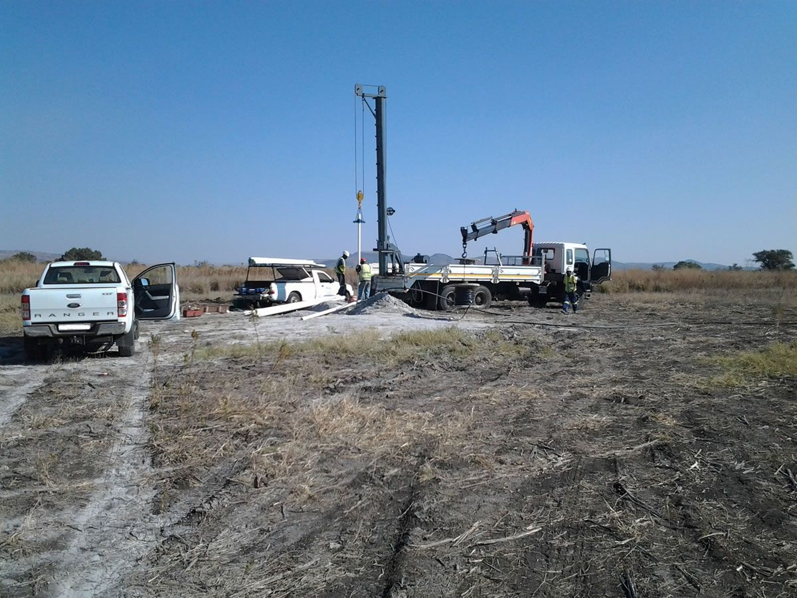
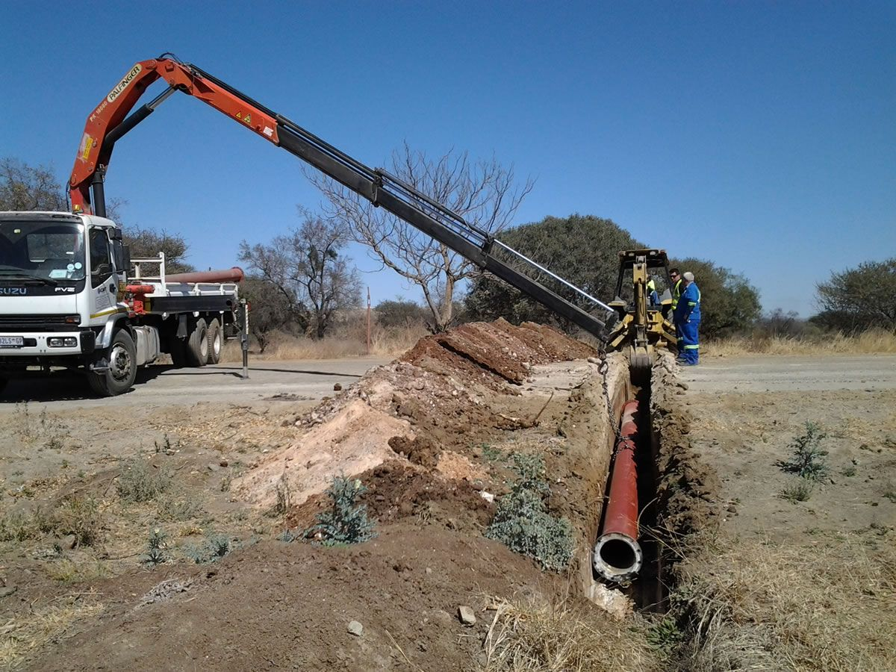
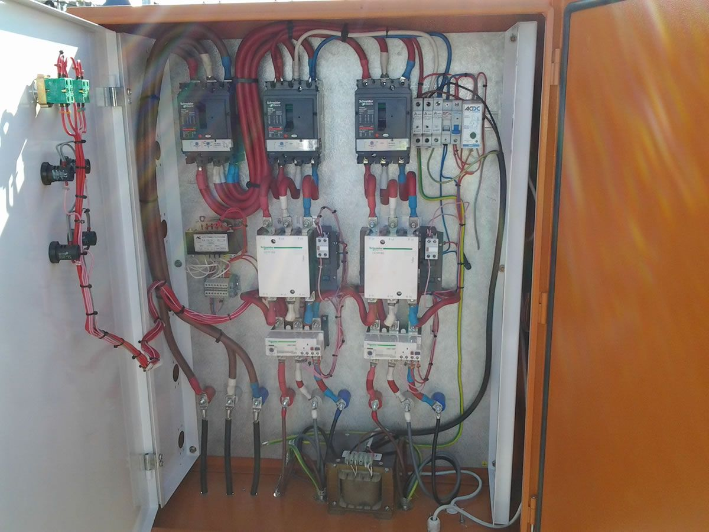
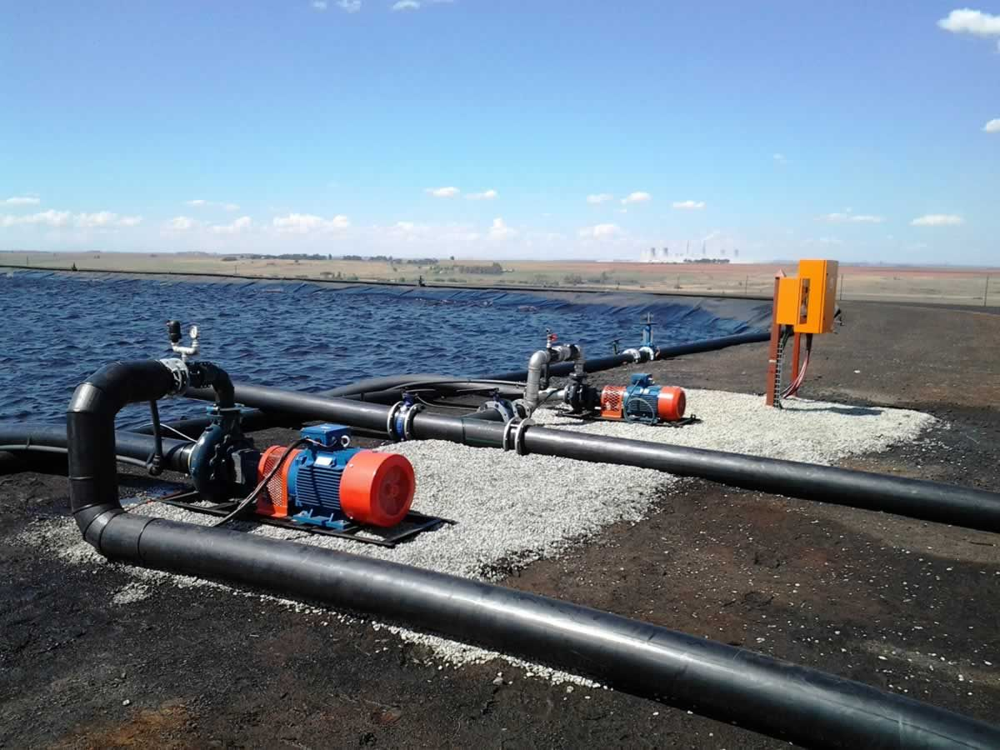
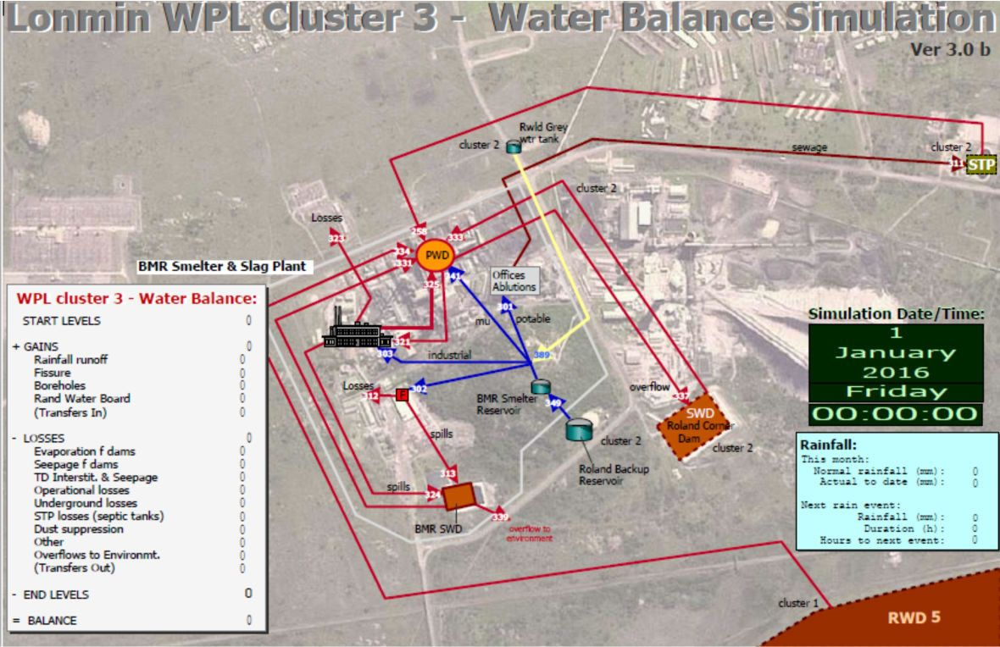
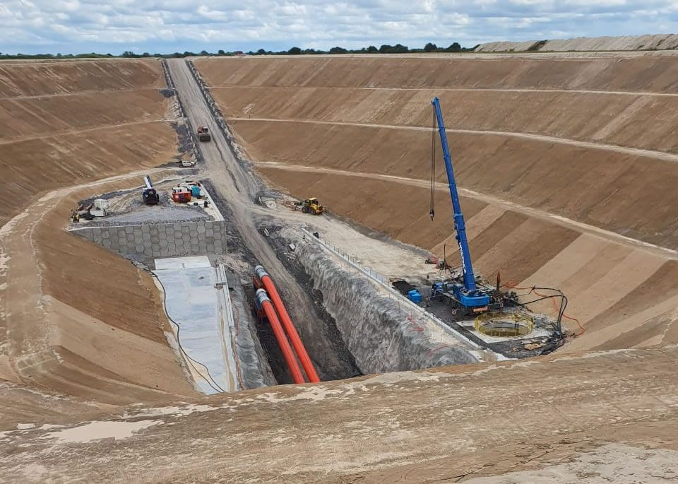
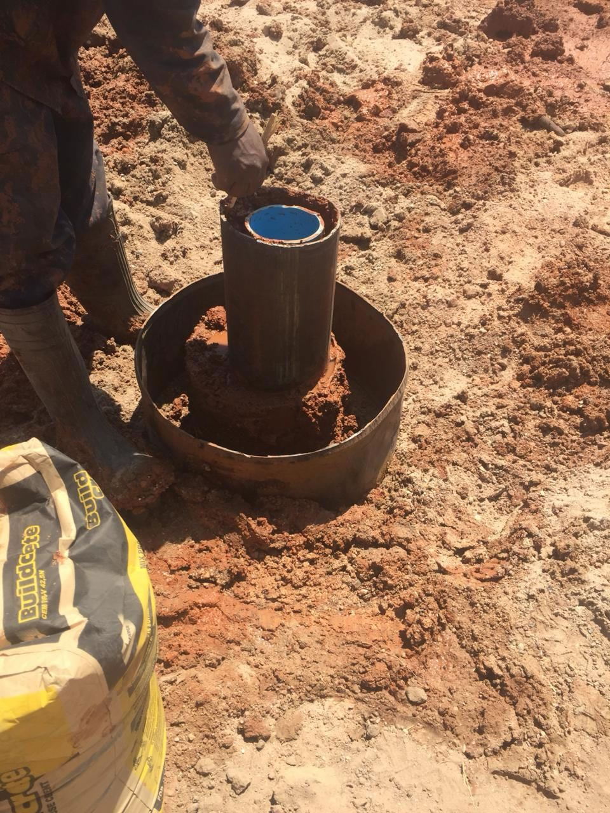

01 / 10
HT & LT Electrical
- Construction of powerlines up to 22kV
- Supply, install and maintain of Pole line transformers and mini-substations
- XLPE supply and installation

All products are sourced from reputable internationally resourced suppliers and carries the appropriate guarantees and warranties.


Design, construction, installation & maintenance of all types of sewer pumps, aerators, clarifiers & automation equipment.






Water Resource Strategy Formulation is done through an Integrated Water Balance Simulation Model (IWBSM). The IWBSM provides the user with a tool that integrates all variables influencing water use on site and allows for quick analysis of different scenarios over life of operations. In this project both an Arena model and a Goldsim model will be developed to seamlessly exchange data.

The aim of the National Department of Water and Sanitation’s Integrated Water Use Licence (IWUL) is to provide a tool for water users to efficiently manage their available water resources. The intention of the licensing process is not to identify all the non-compliances, but rather to provide feedback in areas where management of the water resource may be improved.

Water Conservation can be described as the minimisation of water loss or waste, the care and protection of water resources and the efficient and effective use of water.
Water Demand Management, in turn, is the “adaptation and implementation of a strategy or programme by a water consumer (such as a mine) to influence the water demand and use of water in order to meet any or all of the following objectives: economic efficiency, environmental protection and sustainability of water supply”.
As we are becoming a leader in our industry, CMT Engineering has successfully implemented and completed a variety of projects world-wide through the years.
Some key outputs for the model include the following:
Maintenance schedules have a natural mean time to failure (MTTF) and mean time to repair (MTTR) that uses an exponential distribution to estimate the time it will take before the next unscheduled maintenance event will occur. The repair time also uses an exponential distribution to estimate the time lapse before that component is functional again. Plants, shafts, boreholes and any other significant components in the model may use these functions (each using their own unique MTTF and MTTR average values) to simulate natural unscheduled maintenance events. Scheduled maintenance may be added if it is known.
Rainfall events similarly use other random distribution functions to estimate the time between rainfall events, the duration of each rainfall event and the intensity of each rainfall event (a combination of Normal, Exponential and Poisson distributions are used). These allow for the natural spread of rainfall events and their intensities for different months of the year and the end results are calibrated to ensure long-term monthly average rainfall is adhered to while also producing the natural 1:20 or 1:50 storm events that might occur.
The blend of the distribution functions above and the operational logic applied for each flow (when to switch pumps on/off) results in very realistic simulated results of what “might” happen for any given simulated period. To ensure that a given simulation run does not produce a skewed result set we use stochastic modelling techniques whereby many repetitions are run for the same simulation period. Some runs produce below average rainfall and the next may produce above average values but given enough repetitions it will start to average out. Using statistical analysis techniques, we can then derive the exceedance probabilities that for example will state that:
“We have a 95% confidence level that the storm water dam will not overflow more than once in a simulated fifty year period.”
Testing various water conservation and water demand management (WC/WDM) strategies will therefore allow combined Operations to make informed decisions as to how much each strategy will impact on the critical parameters (like overflows to the environment or how much water will be required externally during peak production periods).
The Water Hunters model allows the user to see the current and forecasted levels of all dams and flow volumes over the full simulation period by means of user-friendly Excel result files. Results are presented in graphical and numerical format for easy analysis by the user.
A static water balance provides a summary of gains and losses for any period selected by the user. This is a valuable tool that allows a snapshot of the complete project in one glance.
The aim of the National Department of Water and Sanitation’s Integrated Water Use Licence (IWUL) is to provide a tool for water users to efficiently manage their available water resources. The intention of the licensing process is not to identify all the non-compliances, but rather to provide feedback in areas where management of the water resource may be improved.
Auditing of the water use licence therefore measures not only the operator’s current performance, but also assists with improvement of water management going forward. A simplistic compliance or non-compliance approach adds no value. The audit needs to be an all-inclusive process that ensures an annual improvement in the overarching management of the water resource.
Water Conservation can be described as the minimisation of water loss or waste, the care and protection of water resources and the efficient and effective use of water.
Water Demand Management, in turn, is the “adaptation and implementation of a strategy or programme by a water consumer (such as a mine) to influence the water demand and use of water in order to meet any or all of the following objectives: economic efficiency, environmental protection and sustainability of water supply”.